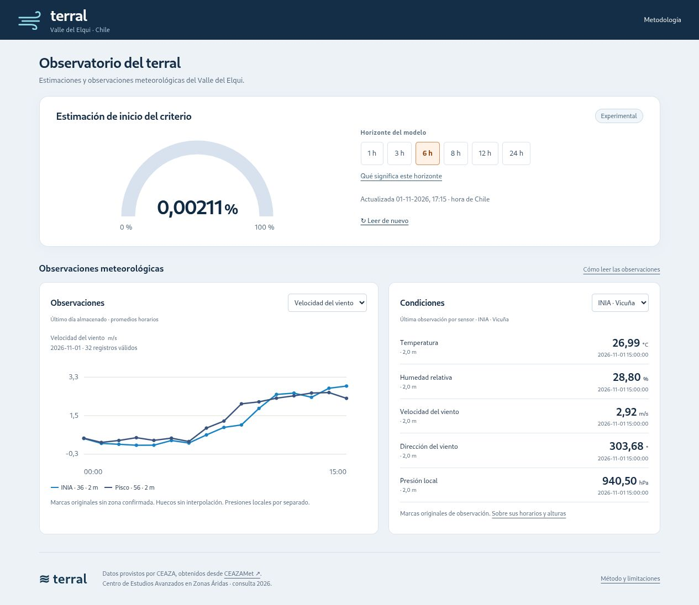

Terral · Observatorio del Valle del Elqui
¿Es posible anticipar el inicio del terral con las observaciones de las estaciones del valle? Terral explora esa pregunta mediante una aplicación que reúne datos meteorológicos y estimaciones de machine learning en un mismo lugar.

El problema
El terral es un viento cálido y seco característico del Valle del Elqui. El proyecto busca reconocer condiciones asociadas a este fenómeno y estimar si podrían comenzar en las horas siguientes. La identificación mediante criterios meteorológicos es una aproximación al fenómeno, no una confirmación de cada episodio.
De los datos a la aplicación
El trabajo integra adquisición, validación y almacenamiento en SQLite con modelos de regresión logística y una aplicación web de consulta. Python permite trabajar con los datos y los modelos; JavaScript forma parte de la interfaz.
- Adquisición: registros de CEAZA, publicados en CEAZAMet, para las estaciones INIA Vicuña y Pisco Elqui.
- Preparación: validación de observaciones y construcción de ventanas con datos disponibles en ambas estaciones.
- Estimación: modelos que utilizan temperatura, humedad, viento y presión para explorar el posible inicio del criterio.
- Consulta: un dashboard con estimaciones por horizonte y gráficas para revisar la evolución de las observaciones.
Cómo se evaluó
Se entrenaron seis modelos de regresión logística con regularización L2 para horizontes de 1, 3, 6, 8, 12 y 24 horas. El entrenamiento utiliza datos de 2013 a 2021 y la evaluación, datos de 2022 y 2023.
Las estimaciones se comparan con una referencia de probabilidad fija. También se evalúan los episodios anticipados, la anticipación y las falsas alarmas. La metodología del observatorio documenta los resultados y sus condiciones de evaluación.
Alcance y próximos pasos
El observatorio es experimental. Un horizonte de seis horas representa una ventana de posible inicio, no una hora exacta. La disponibilidad, frescura y interpretación temporal de las observaciones también condicionan las estimaciones.
Los próximos pasos incluyen ampliar la evaluación a 2024 a 2026 y estudiar el equilibrio entre anticipación, detección y falsas alarmas.
Fuentes
- CEAZAMet: observaciones meteorológicas de CEAZA.
- Metodología de Terral: criterios, evaluación y limitaciones.